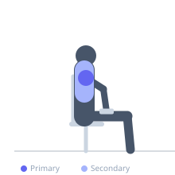
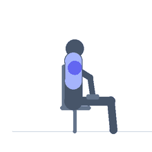

Exercise guide / Seated Dumbbell Lateral Raise (5-Second Eccentric)
Seated Dumbbell Lateral Raise (5-Second Eccentric)
The 5-second eccentric lateral raise extends the lowering phase to a full 5 seconds, creating even greater time under tension for the medial deltoid than the 3-second version. It is an advanced hypertrophy technique and is typically used by experienced trainees for single set shock protocols or as a technique to maintain medial deltoid stimulus when heavy loads are unavailable or not advisable due to injury constraints.
Primary muscles
deltoid lateral
Secondary muscles
trapezius upper
Equipment
Standard Barbell


Starting position
- Sit upright on a bench with dumbbells at the sides.
Setup
- Use a very light dumbbell — a 5-second eccentric with heavy weight is impossible to control. Many trainees use 2-5 kg.
Steps
- Step 1: Raise both arms to shoulder height in 1-2 seconds.
- Step 2: Hold 1 second at the top.
- Step 3: Lower both arms over exactly 5 seconds — one, two, three, four, five.
- Step 4: Return to the starting position.
- Step 5: Repeat for 8-10 reps.
Coaching cues
- Count every second of the descent
- No shortcuts — the 5-second lower is the entire point
- Fight the weight all the way to the bottom
Breathing
- Exhale raising. Inhale controlled through the 5-second descent.
Range of motion
- Shoulder height to sides over 5 controlled seconds.
Tempo
- 2-1-5-0
Common mistakes
- Cheating the tempo — 5 seconds means 5 seconds
- Using too heavy a weight — with 5s eccentric, light weight burns plenty
Safety
- Very light loads only — the extended time under tension is the stimulus, not the weight
- High fatigue technique — limit to 1-2 sets initially
Training
- hypertrophy: 8–12 reps
- hypertrophy: 2–3 sets
- Rest: {'hypertrophy': 120}